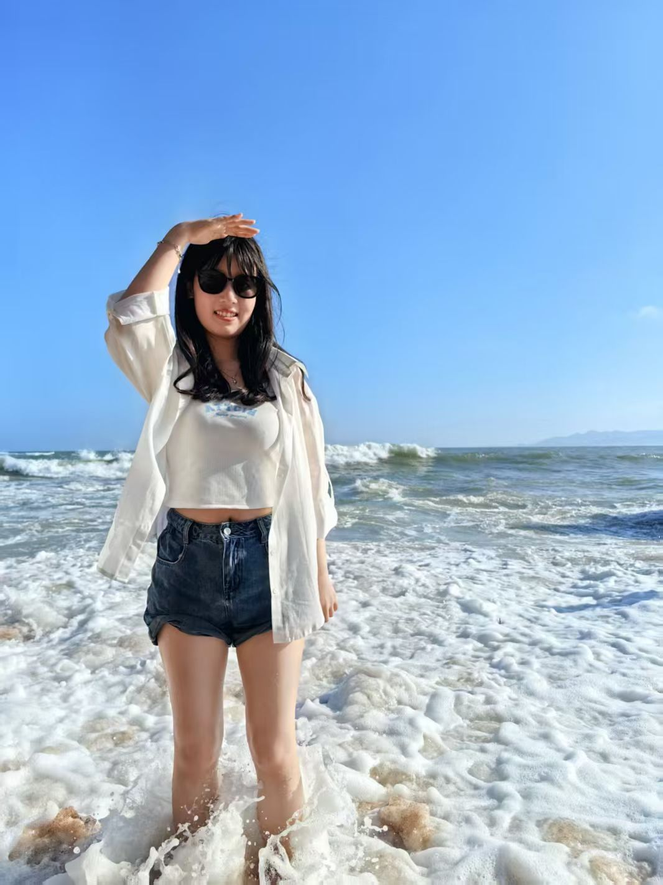

Wenjie Li 李文婕
Computer Science · Nankai University
Ph.D. in Computer Science at Nankai University. I am affiliated with the Nankai-Baidu Joint Lab (NBJL).
My research interests include AI for systems, LLM agents, and resource scheduling.

News
- One paper on LLM tuning was accepted by WISA 2026.
Publications
Patents
Learning-based cache replacement algorithms
Education
- Ph.D. in Computer Science, Nankai University
- B.S. in Computer Science, Nankai University
Honors & Awards
- Huawei Ascend C Operator Development Capability Certification, Intermediate Level.
- Graduate and Outstanding Trainee, Shanghai AI Lab InternLM Practical Camp.
- Runner-up, Jiwang Cup faculty-student mixed team table tennis tournament.
- Gongneng Scholarship, awarded for two consecutive years.
- Nankai University Outstanding Student Award.
- Huawei Scholarship, top 5%.
- Future Star Award, Ministry of Education-Huawei.